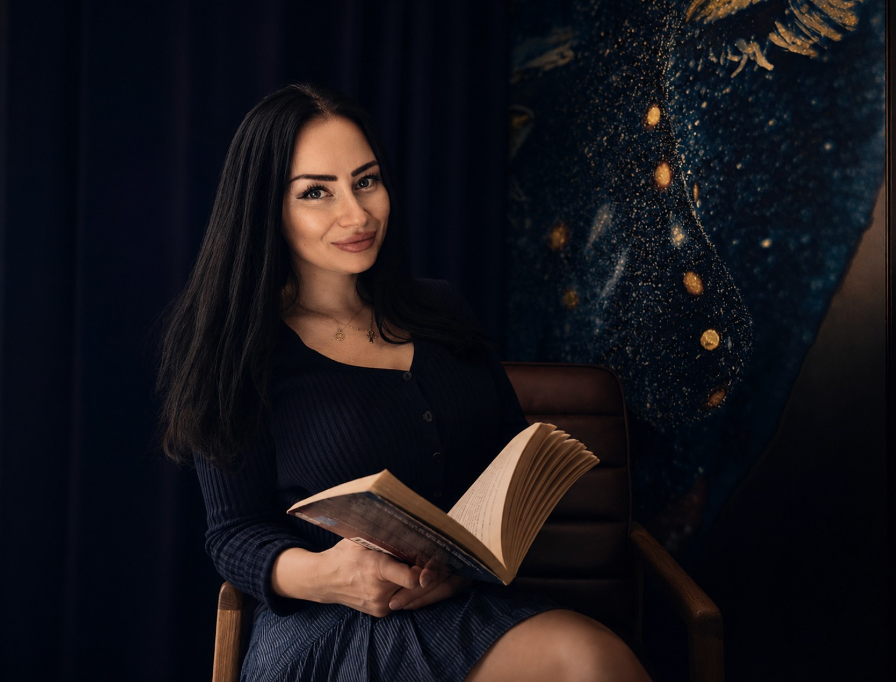

O MNIE
Jestem Kasia i pomagam kobietom wyjść z chaosu, odzyskać kontakt ze sobą i zacząć tworzyć życie, relacje oraz biznes w zgodzie z tym co im w duszy gra.
Jak wyglądała moja historia wyjścia z chaosu?
Od męskiego świata technologii i inwestycji do przebudzonej przedsiębiorczej kobiety prowadzącej biznes w zgodzie z misją duszy.
Od toksycznych, przemocowych relacji romantycznych do partnera, który szanuje i potrafi dać bezpieczeństwo na jakie zasługuję.
Od problemów finansowych do zbudowania bogactwa.
Od uzależnień do uleczenia wewnętrznych ran i traum, które próbowałam zagłuszać.
Od przypadkowego manifestowania dobrych i złych rzeczy do świadomego manifestowania wielkich celów i spełniania kolejnych marzeń z listy.
Moja praca to połączenie intuicyjnego prowadzenia, astrologii, pracy z podświadomością, channelingu z wieloletnim doświadczeniem w 3D, dzięki czemu moje strategie są ugruntowane w realnym świecie. Nie chodzi o chwilową inspirację. Chodzi o zmianę tożsamości, która utrzymuje się w codziennym życiu.
Tutaj nie chodzi o chwilową inspirację. Moim życiowym powołaniem jest przeprowadzać kobiety przez proces transformacji.
Życie przygotowało mnie to tego poprzez serię upadków i powrotów silniejszą w świecie finansów, relacji, biznesu.
Ja znam już moją misję. Teraz pora bym pomogła Ci odnaleźć Twoje powołanie. Jeśli tu trafiłaś to znak, że już czas.
- Ekspertka ds. cyberbezpieczeństwa
- Inwestorka i studentka bankowości inwestycyjnej
- Szefowa marketingu i organizatorka konferencji technologicznej
- Mentorka w świecie technologii
- Mówca na konferencjach technologicznych i biznesowych
- Certyfikowany praktyk QHHT - regresja past life
- Certyfikowana duchowa przewodniczka (medium, channeling)
- Praktyk astrologii i Human Design
- Doświadczenie we wsparciu w procesie przebudzenia
Moje doświadczenie w świecie materialnym czyli 3D
Moje doświadczenie w wyższych wymiarach od 4D wzwyż
MOJA MISJA
Pomagam Ci przestać żyć według starej wersji siebie.
Wierzę, że kobieta nie potrzebuje naprawy. Potrzebuje przypomnienia, kim naprawdę jest — oraz przestrzeni, w której może bezpiecznie porzucić wzorce, role i decyzje, które nigdy nie były jej.